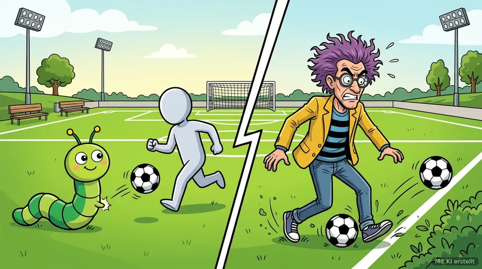
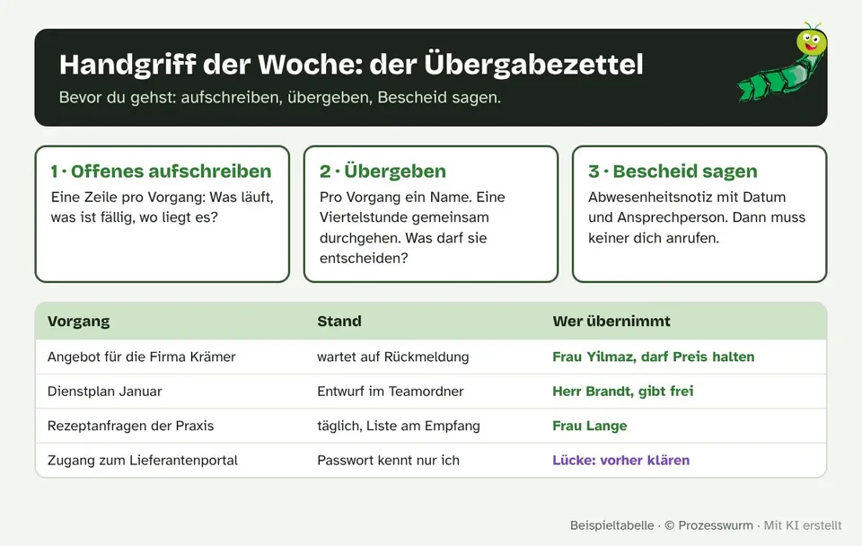

Der Montags-Wurm · 23. November 2026
Wer macht’s, wenn du weg bist?
SALVE! Bald ist Dezember. Resturlaub, Brückentage, Betriebsferien. Und irgendwo klingelt ein Telefon am Strand oder unterm Weihnachtsbaum, weil im Betrieb keiner weiß, wo das Angebot liegt. Diese Woche geht es darum, wie du so übergibst, dass du im Urlaub wirklich weg sein kannst.
1. Aktuelles aus dem Prozessmanagement
Wer macht’s, wenn du weg bist?

Mit KI erstelltIm Sommer hat der Digitalverband Bitkom Berufstätige gefragt, ob sie im Urlaub für die Arbeit erreichbar sind. Zwei Drittel sagen ja: 66 Prozent. Das ist seit Jahren fast gleich, 2025 waren es 67 Prozent, 2024 auch 66. Die meisten lesen Kurznachrichten oder gehen ans Telefon.
Spannend ist das Warum. Nur 16 Prozent der Erreichbaren tun es aus eigenem Antrieb. 53 Prozent sagen, die Kolleginnen und Kollegen erwarten es. 47 Prozent nennen die Vorgesetzten, 34 Prozent die Kundschaft.
Was das mit deinen Abläufen zu tun hat
Wenn Kollegen anrufen, dann meistens nicht aus Bosheit. Sie rufen an, weil sie nicht weiterwissen. Das Wissen steckt in einem einzigen Kopf, und dieser Kopf liegt gerade in der Sonne. Das ist kein Charakterfehler, sondern eine Lücke im Ablauf. Dieselbe Lücke, um die es im Oktober bei der Frage ging, wer eigentlich den Hut auf hat.
Eine gute Übergabe ist wie ein Pass im Fußball: Sie zählt erst, wenn sie ankommt. Ein Zettel, den keiner findet, ist kein Pass. Eine Vertretung, die nicht weiß, was sie entscheiden darf, auch nicht.

Mit KI erstelltHandgriff der Woche: der Übergabezettel
- Offenes aufschreiben. Eine Zeile pro Vorgang: Was läuft gerade, was wird fällig, wo liegen die Unterlagen? Am besten eine Woche vorher, nicht am letzten Nachmittag.
- Übergeben. Zu jedem Vorgang ein Name. Dann eine Viertelstunde gemeinsam durchgehen, solange du noch da bist. Und klären: Was darf die Vertretung selbst entscheiden?
- Bescheid sagen. Eine Abwesenheitsnotiz mit Rückkehrdatum und Ansprechperson. Wer dir schreibt, weiß dann sofort, an wen er sich wenden kann.
| Vorgang | Stand | Wer übernimmt |
|---|---|---|
| Angebot für die Firma Krämer | wartet auf Rückmeldung | Frau Yilmaz, darf Preis halten |
| Dienstplan Januar | Entwurf im Teamordner | Herr Brandt, gibt frei |
| Rezeptanfragen der Praxis | täglich, Liste am Empfang | Frau Lange |
| Zugang zum Lieferantenportal | Passwort kennt nur ich | Lücke: vorher klären |
Die Pflege macht es seit Jahren vor
In Krankenhaus und Pflegeheim ist die Übergabe Alltag: Bei jedem Schichtwechsel wird gesagt, was los war und worauf die nächste Schicht achten muss. Im Büro, im Laden oder in der Werkstatt passiert das oft nur zweimal im Jahr, vor dem großen Urlaub. Dabei hilft derselbe Zettel auch, wenn jemand ganz plötzlich krank wird. Wer ihn laufend pflegt, muss vor dem Urlaub nur noch nachschauen.
Quelle: Bitkom, 22.7.2026
2. Märkte und Nachrichten
Teure Geräte, volle Auftragsbücher
Drei von vier Unternehmen zahlen mehr für IT. Weil Speicherchips teurer geworden sind, haben 75 Prozent der Unternehmen in den letzten zwölf Monaten mehr für Computer und andere IT-Ausstattung bezahlt. Von diesen nutzen 69 Prozent ihre Geräte jetzt länger, 48 Prozent verschieben geplante Anschaffungen. Befragt wurden 603 Unternehmen ab 20 Beschäftigten, veröffentlicht am 16. November.
Quelle: Bitkom, 16.11.2026
Der Maschinenbau schöpft Hoffnung. Das Geschäftsklima im deutschen Maschinenbau ist laut ifo Institut auf 7,6 Punkte gestiegen, nach 4,1 im September. Die Lage wird erstmals seit dem Winter 2023 wieder positiv bewertet, die Auftragsbücher füllen sich den vierten Monat in Folge. Neue Stellen planen die Firmen aber noch nicht: Die Beschäftigungserwartungen bleiben im Minus. Veröffentlicht am 20. November.
Quelle: ifo Institut, 20.11.2026
Was das für dich heißt: Wenn Geräte länger halten müssen, lohnt sich eine einfache Liste: Welches Gerät, wie alt, wer kümmert sich darum? Und wenn mehr Aufträge kommen, aber nicht mehr Leute, muss dasselbe Team mehr schaffen. Dann kostet jede holprige Übergabe doppelt.
3. Zahlen und Erkenntnisse
Urlaub mit Handy in der Tasche
- 66 Prozentder Berufstätigen mit Sommerurlaub waren dort beruflich erreichbar (Bitkom Research, 358 Berufstätige, telefonisch befragt, veröffentlicht am 22.7.2026). Heißt: Für zwei von drei Menschen ist Urlaub nur ein Ortswechsel.
- 53 Prozentder Erreichbaren sagen, die Kolleginnen und Kollegen erwarten das, nur 16 Prozent tun es aus eigenem Antrieb (Bitkom Research, 22.7.2026). Heißt: Der Druck kommt selten vom Chef allein, sondern aus dem Team, das ohne dich nicht weiterweiß.
- 75 Prozentder Unternehmen haben in den letzten zwölf Monaten mehr für IT-Geräte bezahlt (Bitkom Research, 603 Unternehmen ab 20 Beschäftigten, veröffentlicht am 16.11.2026). Heißt: Wer weiß, welche Geräte er hat und wie alt sie sind, kann besser planen als einer, der erst beim Ausfall nachschaut.
Quellen: Bitkom, 22.7.2026 · Bitkom, 16.11.2026
4. Sehenswert
Ist Urlaub wirklich Erholung? (ARTE, 29 Min.)
Urlaub erholt. Das glauben fast alle. Das ARTE-Wissensmagazin „42 – Die Antwort auf fast alles“ zeigt, dass die Forschung da weniger sicher ist, als man denkt. Was im Körper passiert, wenn wir uns erholen, ist noch gar nicht genau verstanden. Und ob der Urlaub hilft oder nur die Pause davor, ist offen.
Warum sich die 29 Minuten lohnen: Wer versteht, wovon Erholung abhängt, plant den Urlaub anders. Zum Beispiel so, dass das Telefon gar nicht erst klingeln muss. In der ARTE-Mediathek, verfügbar bis 24. Mai 2027.
5. Aus der Lernwerkstatt
Der Pass zählt mehr als der Star
Zum Übergabezettel passt die Lektion „Was der Fußball über gute Prozesse lehrt“ aus Stufe B1. Dauer: sieben Minuten. Ein kleiner Auszug:
Zum Merken: Der Pass zählt mehr als der Star.
Mini-Übung: Schau dir eine Übergabe zwischen zwei Abteilungen oder Personen an. Schreib auf, ob geregelt ist, wer wann was übergibt, oder ob es per Zuruf läuft.
Teste dich: Was ist laut Lektion wichtiger als einzelne Stars? Die Auflösung steht in der Lektion.
Dein Fortschritt fährt mit in den Urlaub: der Speicherlink
Jeden Montag wartet auf der Startseite der Lernwerkstatt eine neue Lektion der Woche. Und wer zwischen den Jahren lieber auf dem Sofa als am Schreibtisch lernt: Unter „Fortschritt mitnehmen“ tippst du auf „Speicherlink kopieren“ und schickst dir den Link selbst. Auf dem anderen Gerät öffnen, und dein Stand ist wieder da. Kostenlos und ohne Anmeldung.
6. Lied oder Kurzvideo der Woche
Lied: Vom Suchen zum Finden
Ordner, Unterordner, drei Excel-Listen mit fast demselben Namen: Wer etwas sucht, fragt am Ende doch wieder den Kollegen. Im Lied „Vom Suchen zum Finden“ hat die Sucherei ein Ende, weil das Wissen an einem Ort liegt, den alle kennen. Mit Reggae und Ska, gut für einen grauen Novembermorgen. Und genau das, was eine Vertretung braucht.
Alle Lieder und Videos findest du auf prozesswurm.de unter „Hören und sehen“.
7. Zum Schluss: Ein Satz zum Mitnehmen
„Wer sich nicht vorbereitet, bereitet sich auf das Scheitern vor.“
Der Prozesswurm nickt: Eine Übergabe ist Vorbereitung für jemand anderen. Wer sie eine Woche vorher macht, hat im Urlaub Ruhe, und die Vertretung auch. Doktor Kuddelmuddel winkt ab: „Ich bereite mich nie vor. Dann kann mich auch nichts überraschen. Außer allem.“
Dieser Newsletter erscheint weiterhin jeden Montag. Vielen Dank für deine Zeit. Feedback, Anmerkungen oder Themenvorschläge? Schreib mir gern an info@prozesswurm.de.
Dein Prozesswurm